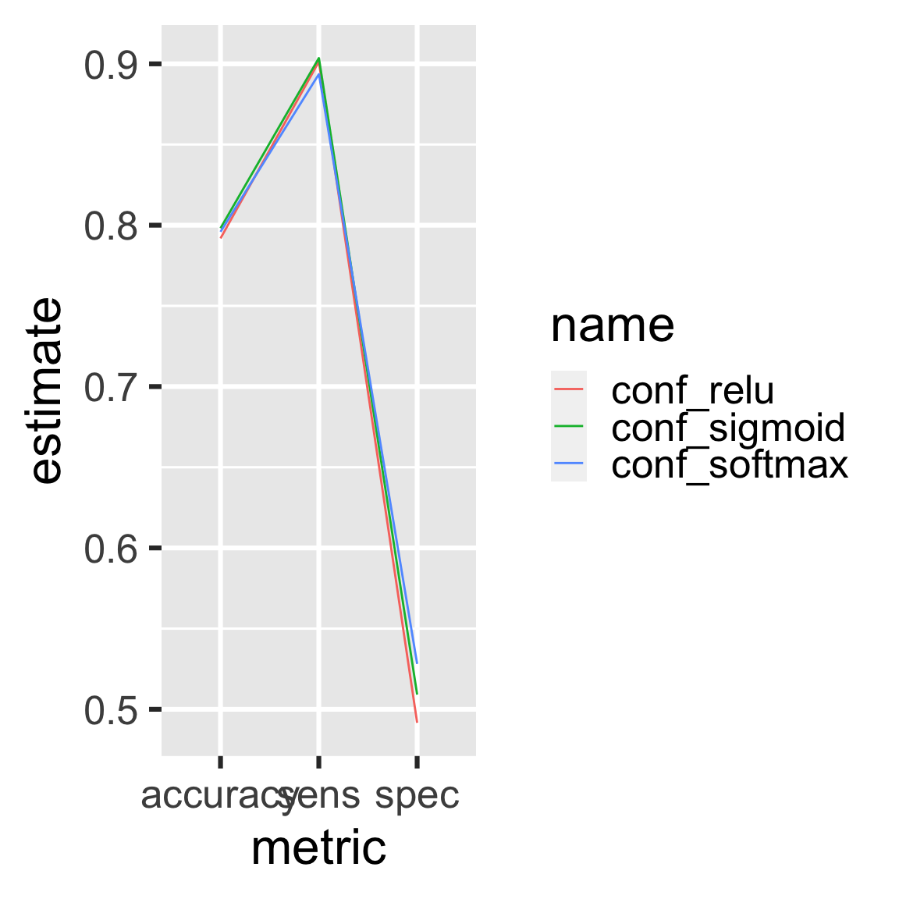

Chapter 10 An analysis of R package download trends
This chapter explores R package download trends using the cranlogs package, and it shows how drake’s custom triggers can help with workflows with remote data sources.
10.1 Get the code.
Write the code files to your workspace.
The new packages folder now includes a file structure of a serious drake project, plus an interactive-tutorial.R to narrate the example. The code is also online here.
10.2 Overview
This small data analysis project explores some trends in R package downloads over time. The datasets are downloaded using the cranlogs package.
library(cranlogs)
cran_downloads(packages = "dplyr", when = "last-week")
#> date count package
#> 1 2019-12-08 25059 dplyr
#> 2 2019-12-09 43861 dplyr
#> 3 2019-12-10 44443 dplyr
#> 4 2019-12-11 43888 dplyr
#> 5 2019-12-12 41600 dplyr
#> 6 2019-12-13 38344 dplyr
#> 7 2019-12-14 25043 dplyrAbove, each count is the number of times dplyr was downloaded from the RStudio CRAN mirror on the given day. To stay up to date with the latest download statistics, we need to refresh the data frequently. With drake, we can bring all our work up to date without restarting everything from scratch.
10.3 Analysis
First, we load the required packages. drake detects the packages you install and load.
We will want custom functions to summarize the CRAN logs we download.
make_my_table <- function(downloads){
group_by(downloads, package) %>%
summarize(mean_downloads = mean(count))
}
make_my_plot <- function(downloads){
ggplot(downloads) +
geom_line(aes(x = date, y = count, group = package, color = package))
}Next, we generate the plan.
We want to explore the daily downloads from the knitr, Rcpp, and ggplot2 packages. We will use the cranlogs package to get daily logs of package downloads from RStudio’s CRAN mirror. In our drake_plan(), we declare targets older and recent to contain snapshots of the logs.
The following drake_plan() syntax is described here, which is supported in drake 7.0.0 and above.
plan <- drake_plan(
older = cran_downloads(
packages = c("knitr", "Rcpp", "ggplot2"),
from = "2016-11-01",
to = "2016-12-01"
),
recent = target(
command = cran_downloads(
packages = c("knitr", "Rcpp", "ggplot2"),
when = "last-month"
),
trigger = trigger(change = latest_log_date())
),
averages = target(
make_my_table(data),
transform = map(data = c(older, recent))
),
plot = target(
make_my_plot(data),
transform = map(data)
),
report = knit(
knitr_in("report.Rmd"),
file_out("report.md"),
quiet = TRUE
)
)Notice the custom trigger for the target recent. Here, we are telling drake to rebuild recent whenever a new day’s log is uploaded to http://cran-logs.rstudio.com. In other words, drake keeps track of the return value of latest_log_date() and recomputes recent (during make()) if that value changed since the last make(). Here, latest_log_date() is one of our custom imported functions. We use it to scrape http://cran-logs.rstudio.com using the rvest package.
latest_log_date <- function(){
read_html("http://cran-logs.rstudio.com/") %>%
html_nodes("li:last-of-type") %>%
html_nodes("a:last-of-type") %>%
html_text() %>%
max
}Now, we run the project to download the data and analyze it.
The results will be summarized in the knitted report, report.md,
but you can also read the results directly from the cache.
make(plan)
#> target older
#> target recent
#> target averages_older
#> target plot_older
#> target averages_recent
#> target plot_recent
#> target report
readd(averages_recent)
#> # A tibble: 3 x 2
#> package mean_downloads
#> <chr> <dbl>
#> 1 ggplot2 33628.
#> 2 knitr 27383
#> 3 Rcpp 34580.
readd(averages_older)
#> # A tibble: 3 x 2
#> package mean_downloads
#> <chr> <dbl>
#> 1 ggplot2 14641.
#> 2 knitr 9069.
#> 3 Rcpp 14408.
readd(plot_recent)

If we run make() again right away, we see that everything is up to date. But if we wait until a new day’s log is uploaded, make() will update recent and everything that depends on it.
To visualize the build behavior, you can plot the dependency network.
10.4 Other ways to trigger downloads
Sometimes, our remote data sources get revised, and web scraping may not be the best way to detect changes. We may want to look at our remote dataset’s modification time or HTTP ETag. To see how this works, consider the CRAN log file from February 9, 2018.
We can track the modification date using the httr package.
library(httr) # For querying websites.
HEAD(url)$headers[["last-modified"]]
#> [1] "Mon, 12 Feb 2018 16:34:48 GMT"In our drake plan, we can track this timestamp and trigger a download whenever it changes.
plan <- drake_plan(
logs = target(
get_logs(url),
trigger = trigger(change = HEAD(url)$headers[["last-modified"]])
)
)
plan
#> # A tibble: 1 x 3
#> target command trigger
#> <chr> <expr> <expr>
#> 1 logs get_logs(url) trigger(change = HEAD(url)$headers[["last-modified"]])where
library(R.utils) # For unzipping the files we download.
library(curl) # For downloading data.
get_logs <- function(url){
curl_download(url, "logs.csv.gz") # Get a big file.
gunzip("logs.csv.gz", overwrite = TRUE) # Unzip it.
out <- read.csv("logs.csv", nrows = 4) # Extract the data you need.
unlink(c("logs.csv.gz", "logs.csv")) # Remove the big files
out # Value of the target.
}When we are ready, we run the workflow.
make(plan)
#> target logs
readd(logs)
#> date time size version os country ip_id
#> 1 2018-02-09 13:01:13 82375220 3.4.3 win RO 1
#> 2 2018-02-09 13:02:06 74286541 3.3.3 win US 2
#> 3 2018-02-09 13:02:10 82375216 3.4.3 win US 3
#> 4 2018-02-09 13:03:30 82375220 3.4.3 win IS 4If the log file at the url ever changes, the timestamp will update remotely, and make() will download the file again.